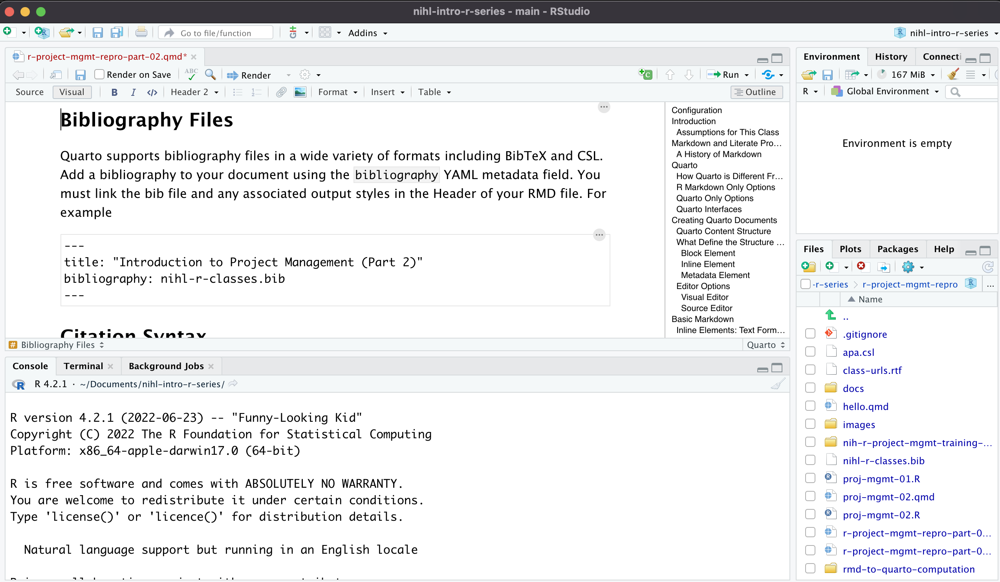
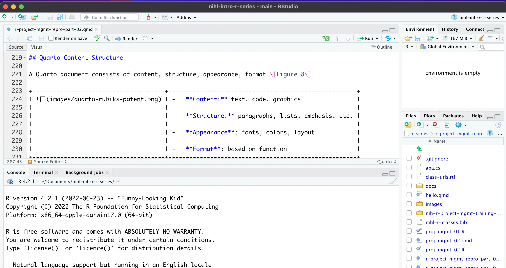
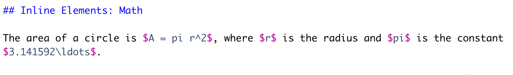
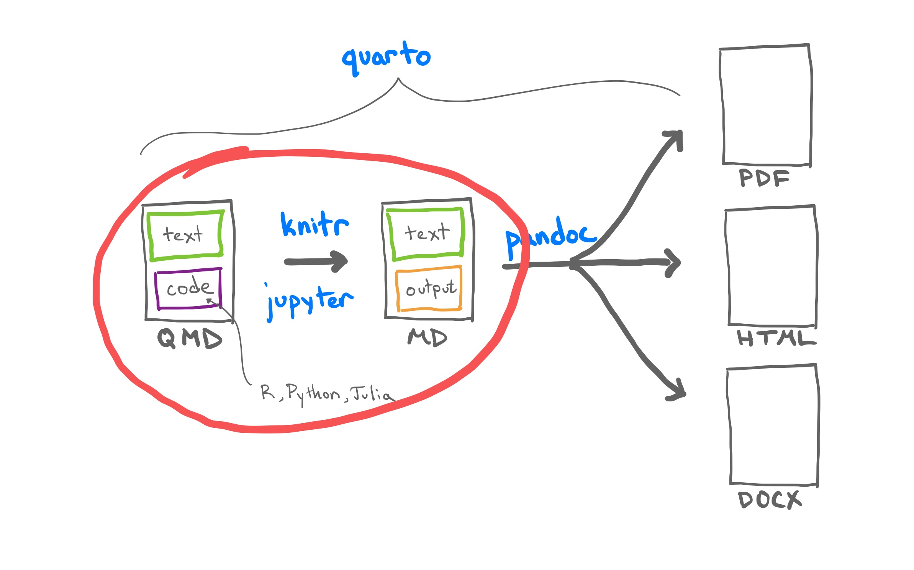
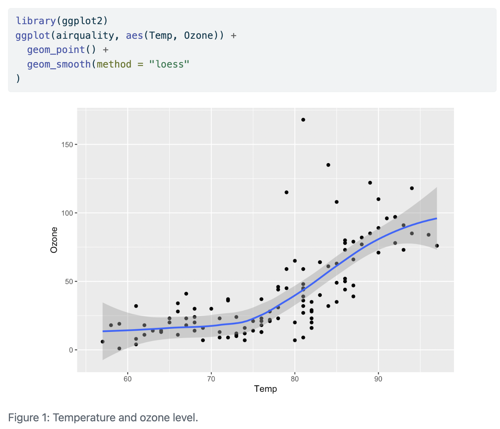
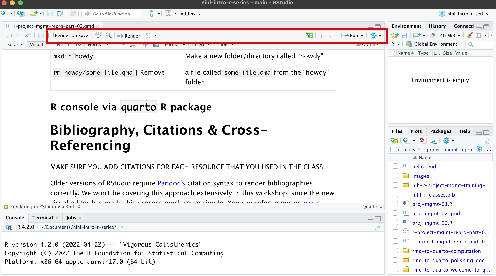
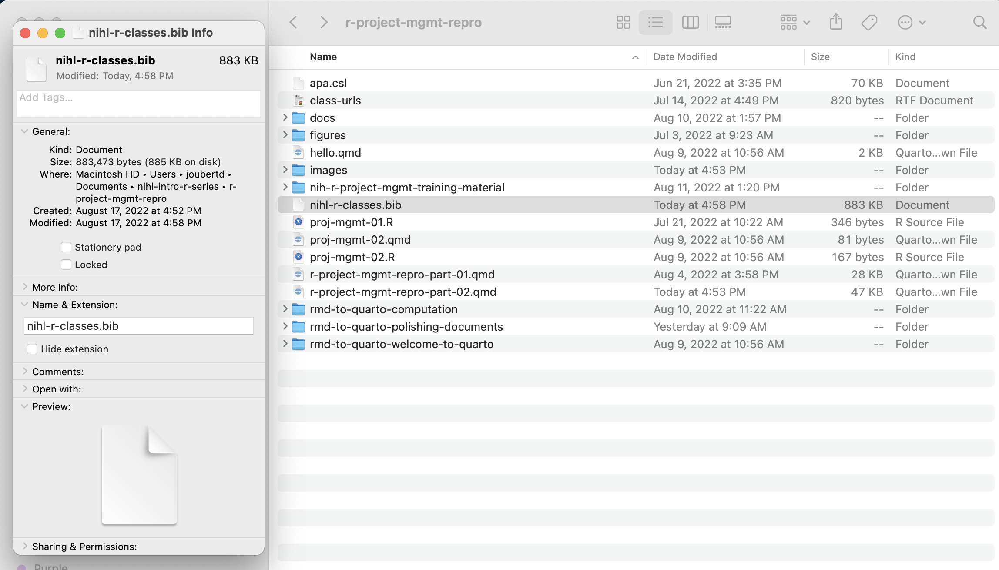

# install.packages("quarto")Project Management and Reproducibility in RStudio: Part 2
Configuration
This class features exercises that will help you learn by doing. To prepare, please install the following on your machine:
Install latest version of RStudio, v2022.07.0-548 or later
Install latest version of Quarto (v1.0.36 or greater)
Quarto is also available as a package. The quarto package provides an R interface to frequently used operations in the Quarto Command Line Interface (CLI). The package is not a requirement for using Quarto with R. Rather, it provides an R interface to common Quarto operations for users who prefer to work in the R console rather than a terminal, and for package authors that want to programatically interface with Quarto.
You will also need to install the knitr package. Knitr is a general-purpose tool for dynamic report generation in R using Literate Programming techniques.
# install.packages("knitr")Other useful packages to install include the tidyverse and rmarkdown packages.
rmarkdown, The rmarkdown package helps you create dynamic analysis documents that combine code, rendered output (such as figures).
tidyverse, includes the packages that you’re likely to use in everyday data analyses.
Introduction
This one-hour class focuses on data and project management using R and RStudio. RStudio makes it possible to work on a complete research project in a more efficient, integrated, and organized manner. Participants will learn how to create reproducible documents that combine code, analysis, and narrative. This intermediate-level course is designed to be relevant to students from different disciplines. Some familiarity or experience in R and RStudio is recommended but not required. Students are encouraged to install R and RStudio before the webinar so that they can follow along with the instructor.
Upon completion of this class students should be able to:
- Create a markdown document using Quarto
- Distinguish between source and visual editors
- Add code chunks to markdown documents
- Create a bibliography and link it to a markdown document
Assumptions for This Class
| You know R | |
| You know a little bit of markdown | |
| You want to learn about Quarto, the next-generation of markdown |
Markdown and Literate Programming
Researchers and analysts tend to write a lot of reports, describing their analyses and results, for their collaborators or to document their work for future reference.
Ideally, you want your reports to be reproducible documents. For example, if an error is discovered, or if some additional subjects are added to the data, you can just re-compile the report and get the new or corrected results rather than having to reconstruct figures, paste them into a Word document, and hand-edit various detailed results.
Many new users begin by first writing a single R script containing all of their work, and then share the analysis by emailing the script and various graphs as attachments. But this can be cumbersome, requiring a lengthy discussion to explain which attachment was which result.
One option is using R Markdown, a light-weight markup language for creating documents in multiple formats. When the document is processed by knitr, chunks of code will be executed, and graphs or other results will be inserted into the final document. This sort of idea has been called “literate programming”.
Additionally, the formatting of and markdown document is simple and easy to modify, allowing you to spend more time on your analyses instead of writing reports. You can use a single markdown file to both
Save and execute code
Generate high quality reports that can be shared with an audience
This page provides a nice overview of R markdown the top provide examples of R Markdown documents, as well as an in depth discussion of various R Markdown topics.
You may also find the following resources helpful:
A History of Markdown
History adapted from (Bray et al., n.d.)
1984 Literate Programming proposed to combine text with code
2002
Sweaveweaves together S/R and TEXTEX2006
pandocconverts between different document formats2012
knitra next gen Sweave for R and Markdown2014
knitr::pandocadded to leveragepandocflexible outputs2015
pandocfunctionality moved into newrmarkdown2018 R Markdown: A definite guide
2020 R Markdown Cookbook
2022 Quarto
Figure 1 is displaying the workflow for RMD.

Figure 1: RMD transformation workflow.
Quarto
In August 2022, RStudio adopted Quarto as its supporting publishing platform. Quarto is an open-source scientific and technical publishing system built on Pandoc. Quarto allows you to create dynamic content with Python, R, Julia, and Observable.
Author documents as plain text markdown or Jupyter notebooks.
Publish high-quality articles, reports, presentations, websites, blogs, and books in multiple formats.
Author with scientific markdown, including equations, citations, crossrefs, and figure panels.
Figure 2 is displaying the workflow for Quarto.

Figure 2: Quarto transformation workflow.
How Quarto is Different From R Markdown
Quarto is compute-agnostic. R Markdown requires R.
The ecosystem of R packages is replaced by a single framework.
R Markdown Only Options
Access tools built around R Markdown (e.g.
blogdown) that haven’t yet been implemented in QuartoHeavy users of such tools may want to stick with R Markdown
Quarto Only Options
Easier to organize appearance across documents
Features (e.g. figures, tables) have better cross-format support
Better cross referencing
Up-to-date revealjs slides. reveal.js is an open source HTML presentation framework. It’s a tool that enables anyone with a web browser to create fully-featured and beautiful presentations for free.
Easier to customize websites and books with projects
Quarto Interfaces
In this class we will be creating and interacting with Quarto docs using RStudio [Figure 3].

Figure 3: Quarto doc opened in RStudio.
However, you can create Quarto docs using Jupyter notebooks [Figure 4].

Figure 4: Quarto doc opened in a Jupyter notebook.
You can also create Quarto docs using a text editor. Figure 5 is a Quarto doc opened in Visual Studio Code editor. You might have also noticed that the code in Figure 5 is Python.

Figure 5: Quarto doc opened in Visual Studio Code editor.
Creating Quarto Documents
https://rstudio-conf-2022.github.io/rmd-to-quarto/materials/2-polishing-documents/
Quarto is a multi-language, next generation version of R Markdown from RStudio, with many new new features and capabilities. A Quarto document (.qmd) is a plain text file, that can be rendered to many different formats. Like R Markdown, Quarto uses Knitr to execute R code, and is therefore able to render most existing Rmd files without modification. Also, most .ipynb can be rendered as-is via Quarto.
In this section we are going to learn how to create generic block and inline elements, set classes and attributes, and practice using Quarto-specific elements in RStudio’s visual editor. Although we do not cover this topic in this class, I have included some resources on how to customize the appearance of your documents with elementary CSS.
https://quarto.org/docs/computations/r.html
Let us create a new document by navigating to File > New File > Quarto Document [Figure 6].
Add the title Proj-Mgmt-02.
Add your name as author
Leave Knitr as the render engine
Enable the Visual Markdown Editor (more about this feature below)

Figure 6: Creating a new Quarto document.
If you scroll down the doc that you just created you can see that the Quarto file is already populated with text and code [Figure 7].

Figure 7: Default RMD document.
Let’s first delete the generic text because we don’t need it at this point. The only thing we need to keep is the Header:
---
title: "Proj-Mgmt-01"
author: "Doug Joubert"
format: html
editor: visual
---
Quarto Content Structure
A Quarto document consists of content, structure, appearance, format [Figure 8].
 |
|
Figure 8: Sample quarto document.
What Define the Structure of a Document
A document is a list of block elements that contain inline elements or other blocks, along with associated metadata.
Block Element
A Block Element starts on a new line and followed by an empty line. An example of block elements is included in Figure 9.

Figure 9: Example of Quarto block elements.
Inline Element
Inline elements modify content inline and are not followed by a new line. An example of inline elements are included in Figure 10.

Figure 10: Inline element in a Quarto doc.
Metadata Element
Metadata elements contain ancillary info about the document’s origin, format, look, etc. An example of a metadata elements are included in Figure 11.

Figure 11: Example of Quarto metadata elements.
Figure 12 is displaying both the Quarto code (left) and the rendered Quarto code (right).
| Quarto Code | Output on Render |
|---|---|
 |
 |
Figure 12: Example of a rendered Quarto document.
Editor Options
Visual Editor
The Quarto visual editor provides a WYSIWYM editing interface for all of Pandoc markdown, including tables, citations, cross-references, footnotes, divs/spans, definition lists, attributes, raw HTML/TeX, and more. The visual editor also includes support for executing code cells and viewing their output inline.
Current version of RStudio has the Source/Visual tabs on the Menu panel. If you are using an older version of RStudio, the visual editor is accessible through a small button on the far right side of the script/document pane in RStudio. The icon is a protractor, but from further away it just looks like a squiggly “A”. Figure 13 is displaying the Quarto document for this class, in visual mode.

Figure 13: Markdown using the visual editor.
Source Editor
Figure 14 is showng the same document using the “source editor” mode. Notice the symbols scattered throughout the text are examples of R Markdown syntax.

Figure 14: RMD file using Source Editor.
It is good to be aware of how to use the source editor, since you might have to fix a piece of broken markdown created using the Visual Editor.
Basic Markdown
Markdown is designed to be easy to write, and, even more importantly, easy to read. As previously mentioned, Quarto uses extended version of Pandoc markdown designed with multiple output formats in mind.
Block Elements
Block Elements: Lists
You can make a numbered list by just using numbers.
1. bold with double-asterisks
2. italics with underscores
3. code-type font with backticksThis will appear as:
bold with double-asterisks
italics with underscores
code-type font with backticks
Pandoc gives you a lot of control over lists, including nesting, definition lists, blocks in lists, and example lists. The Pandoc manual has detailed information about lists.
Block Elements: Headers
You can make section headers of different sizes by initiating a line with some number of # symbols:
# Title
## Main section
### Sub-section
#### Sub-sub sectionBlock Elements: Math
When using math as Block Elements, math use $$ delimiters. The delimiters may be separated from the formula by whitespace. No blank lines between the opening and closing $$ delimiters. For example:
A larger equation:
\[ f(x)={\sqrt{\frac{\tau}{2\pi}}} e^{-\tau (x-\mu )^{2}/2} \]
Block Elements: Images
Block images use the same syntax as inline images. However, images on their own line become a block:
Images on their own line become a block:

Inline Elements
Inline Elements: Text Formatting
| Markdown Syntax | Output |
|---|---|
|
italics and bold |
|
superscript2 / subscript2 |
|
|
|
verbatim code |
Inline Elements: Lists
You can make a bullet list by writing a list with hyphens or asterisks, like this:
* bold with double-asterisks
* italics with underscores
* code-type font with backticksor like this:
- bold with double-asterisks
- italics with underscores
- code-type font with backticksEach will appear as:
bold with double-asterisks
italics with underscores
code-type font with backticks
You can use whatever method you prefer, but be consistent. This maintains the readability of your code.
Inline Elements: Math
Figure 15 is displaying the markdown that generates the math displayed below.

Figure 15: Inline element: math markdown.
The area of a circle is \(A = pi r^2\), where \(r\) is the radius and \(pi\) is the constant \(3.141592\ldots\).
TeX math occurs between two $. Opening $ must have a non-space character immediately to its right, while the closing $ must have a non-space character immediately to its left, and must not be followed immediately by a digit.
Inline Elements: Links and Images
You can embed links with names Links in Quarto
You can also used direct links https://quarto.org/docs/reference/formats/html.html#links
Linking to images is very similar, except that you start with a bang ! This is an example of and inline link to an image of an Elephant
The text withing the [] provides a caption for the embedded image.
Metadata: YAML
Metadata can be included via YAML, which is human-readable data-serialization language. It is commonly used for configuration files and in applications where data is being stored or transmitted. For example the Header of a Quarto document:
---
title: "US Patent: A Spatial Toy"
author:
- Erno Rubrik
- Albert Einstein
format:
html:
toc: true
abstract: |
This is the abstract.
It has two paragraphs.
---There are some syntax rules:
Set a single option
key: valueStrings with
:must be quotedInclude multiple values in a list with
-Nest key-value pairs using indentation
Multi-line strings follow
|Multiple YAML blocks in a document will be merged
These two resources have more information about YAML
Pandoc’s interpretation of YAML metadata:
An overview of YAML syntax:
References and further reading
A Brief History of R Markdown: a presentation by Yihui Xie in 2021.
Pandoc documentation on type references: this section documents the tools needed to write Lua filters but included in this is a compendium of the different block and inline elements recognized by pandoc.
Block and Inline Elements: from Client-side Web Development by Ross and Freeman. Provides clear description of elements in the setting of HTML.
Command Line Essentials: a short primer on how to navigate through a file structure at the command line.sla
The Polishing Documents section of the RMD to Quarto workshop has some great information. However, I think it would work best as an advanced class.
Adding Code Blocks Using R
Quarto is a multi-language, next generation version of R Markdown from RStudio, with many new new features and capabilities. Like R Markdown, Quarto uses Knitr to execute R code, and is therefore able to render most existing Rmd files without modification.
This section will only focus on code blocks using R. Quarto documentation includes options for other languages. We’ll start by covering the basics of Quarto, then delve into the differences between Quarto and R Markdown in the sections on Chunk Options and Output Formats below. Let us revisit the Quarto workflow that we saw in Figure 2, focusing on the code block [Figure 17].

Figure 17: Quarto workflow, with focus on code blocks and conversion of code.
Inserting Code Chunks
You can quickly insert chunks like these into your file with:
the keyboard shortcut Ctrl + Alt + I (OS X: Cmd + Option + I)
the Add Chunk command in the editor toolbar
or by typing the chunk delimiters {r} and ```.
The most basic (and empty) code chunk looks like this [Figure 18]

Figure 18: Code chunk in Source-mode and in Visual-mode.
Although I am demonstrating using R, it’s possible to use other programming or markup languages. For example, we have seen that we can use LaTeX code for equations. You can also use python and a handful of other languages [Figure 19].

Figure 19: Code options available in markdown.
Basic Anatomy of the Code Chunk
Code blocks that use braces around the language name (e.g. {r}) are executable, and will be run by Quarto during render. Here is a simple example:
library(ggplot2)
ggplot(airquality, aes(Temp, Ozone)) +
geom_point() +
geom_smooth(method = "loess"
)`geom_smooth()` using formula 'y ~ x'Warning: Removed 37 rows containing non-finite values (stat_smooth).Warning: Removed 37 rows containing missing values (geom_point). {#fig-airquality 01 width=576}
{#fig-airquality 01 width=576}
You might have noticed that there are some special comments at the top of the code block. These comments use #| (the hash pipe!). #| provides the cell options. When the document is rendered, this code chunk will look like this [Figure 20]:

Figure 20: Rendered version of a code-chunk.
While it is possible to use R chunks options, hash pipe options are more portable across computational engines. Also, don’t forget the “tab-complete” option that is built into RStudio [Figure 21].

Figure 21: Example of tab-complete feature in RStudio.
Run the code in a code chunk
There are 3 main options for running and debugging code that don’t require us to wait for the file to render.
- Run from code chunk (green play button on the right top corner). This allows us to run one specific code chunk [Figure 22].

Figure 22: Running a code chunk from the code-box.
- Run menu, which gives more options for running code chunks including the current one, the next one, all chunks, etc [Figure 23].

Figure 23: Running a code chunk from the Code-Chunk menu.
- Using keyboard shortcuts
| Task | Windows & Linux | macOS |
|---|---|---|
| Create a code chunk | Ctrl + Alt + I | Cmd + Option + I |
| Run all chunks above | Ctrl+Alt+P | Command+Option+P |
| Run current chunk | Ctrl+Alt+C | Command+Option+C |
| Run current chunk | Ctrl+Shift+Enter | Command+Shift+Enter |
| Run next chunk | Ctrl+Alt+N | Command+Option+N |
| Run all chunks | Ctrl+Alt+R | Command+Option+R |
| Go to next chunk/title | Ctrl+PgDown | Command+PgDown |
| Go to previous chunk/title | Ctrl+PgUp | Command+PgUp |
Labeling Code Chunk
While not necessary for running your code, it is good practice is to give a name to each code chunk because it gives the chunk a unique identifier which allows for more advanced options (such as cross-referencing) to work with your rmd files later on:
{r chunk-name}
Some things to keep in mind
The chunk name is the only value other than r in the code chunk options that doesn’t require a tag (i.e.
echo =)The chunk label has to be unique (i.e. you can’t use the the same name for multiple chunks)
We’ll see in a bit where this code chunk label comes in handy. But, for now let’s go back and give our first code chunk a name:
Creating Air Quality Figure
Then, run the code-chunk
library(ggplot2)
ggplot(airquality, aes(Temp, Ozone)) +
geom_point() +
geom_smooth(method = "loess")`geom_smooth()` using formula 'y ~ x'Warning: Removed 37 rows containing non-finite values (stat_smooth).Warning: Removed 37 rows containing missing values (geom_point). {#fig-airquality 02 width=576}
{#fig-airquality 02 width=576}
Figure 24 is displaying the output of the code-chunk. Can you explain what is happening in the console?

Figure 24: Output from our first code chunk.
Code Chunk Options
There are over 50 different code chunk options. Wow, that is a lot. Obviously we will not go over all of them, but they fall into several larger categories including: code evaluation, text output, code style, cache options, plot output and animation.
You can find a complete list of code chunk options on Knitr developer, Yihui Xie’s, online guide to knitr. Or, you can find a brief list of all options on the R Markdown Reference guide on page 3 accesible through the RStudio Interface by navigating to the main menu bar Help > Cheat Sheets > R Markdown Reference Guide.
The chunk name is the only value other than r in the code chunk options that doesn’t require a tag (i.e. the “= VALUE” part of option = VALUE). So chunk options will always require a tag, and the syntax will be in the form:
{r chunk-label, option = VALUE}
The option always follows the code chunk label (don’t forget to add a , after the label either).
Code Evaluation Option
| Option | Description |
|---|---|
include |
Catch all for preventing any output (code or results) from being included (e.g. include: false suppresses all output from the code block). |
Text Output Options
| Option | Description |
|---|---|
eval |
Evaluate the code chunk (if false, just echos the code into the output). |
echo |
Include the source code in output |
output |
Include the results of executing the code in the output (true, false, or asis to indicate that the output is raw markdown and should not have any of Quarto’s standard enclosing markdown). |
warning |
Include warnings in the output. |
error |
Include errors in the output. |
The code chunk below is a modification of the previous code chunk and includes the text output option warning: false
library(ggplot2)
ggplot(airquality, aes(Temp, Ozone)) +
geom_point() +
geom_smooth(method = "loess"
) {#fig-airquality 03 width=576}
{#fig-airquality 03 width=576}
The knitr syntax for passing options still works since Quarto uses knitr.
library(ggplot2)
ggplot(airquality, aes(Temp, Ozone)) +
geom_point() +
geom_smooth(method = "loess") +
labs(caption = "Temperature and ozone level")`geom_smooth()` using formula 'y ~ x'
Figure Output
Figure output options are similar to those used in R markdown. However, Pandoc markdown syntax is used for figures. Let us compare the two options. The code chunk below is using R markdown.
library(palmerpenguins)
library(ggplot2)
ggplot(penguins, aes(x = bill_length_mm,
y = bill_depth_mm,
col = island)) +
geom_point() +
labs(caption ="Penguin lenght and depth",
alt="Penguin data from palmerpenguins package")Warning: Removed 2 rows containing missing values (geom_point).
The code chunk below is using Pandoc/Quarto
library(palmerpenguins)
library(ggplot2)
ggplot(penguins, aes(x = bill_length_mm,
y = bill_depth_mm,
col = island)) +
geom_point() Warning: Removed 2 rows containing missing values (geom_point).
Rendering
There are three methods for rendering a Quarto document.
Render in RStudio
System shell via
quarto renderR console via
quartoR package
Rendering in RStudio Via Knitr
RStudio has deep integration with R, knitr and Quarto
Render button
Visual Editor
Preview of output
You should always use the most recent release of the RStudio IDE - especially for the Quarto features. RStudio 2022.07 and beyond comes bundled with a production-stable release of Quarto, no additional installs are needed.
When you Render in RStudio, starts a background job and previews the output. Quarto uses the Knitr engine just like RMarkdown to execute R code natively. Quarto can also use the Jupyter engine to natively execute Julia, Python, or other languages that Jupyter supports.
Figure 25 is highlighting the Render button to preview documents as you edit them.

Figure 25: Rendering Quarto documents in RStudio.
System shell via quarto render
R console via quarto R package
If you are not using RStudio and/or you prefer to render from the R console, you can do so using the quarto R package. To install the R package
# install.packages("quarto")I have commented out the code since I already have the package installed. You can learn more about the package from the Quarto resources page, or from the GitHub page.
Bibliography, Citations & Cross-Referencing
Quarto will use Pandoc to automatically generate citations and a bibliography in a number of styles. To use this capability, you will need:
A quarto document formatted with citations (see Citation Markdown).
A bibliographic data source, for example a BibTeX (
.bib) file.Optionally, a
CSLfile which specifies the formatting to use when generating the citations and bibliography.
Bibliography Files
Quarto supports bibliography files in a wide variety of formats including BibTeX and CSL. Add a bibliography to your document using the bibliography YAML metadata field. You must link the bib file and any associated output styles in the Header of your RMD file. For example
---
title: "Introduction to Project Management (Part 2)"
bibliography: nihl-r-classes.bib
---Citation Syntax
Quarto uses the standard Pandoc markdown representation for citations (e.g. [@citation]) — citations go inside square brackets and are separated by semicolons. Since I will copying my references from Endnote, I will not go over the citation metadata. You can provide citation data for Quarto documents in the document front matter. The citation options are based upon the Citation Style Language (CSL) specification for items, but as YAML (rather than XML). Consult this page for more information.
Citation Style
Quarto uses Pandoc to format citations and bibliographies. By default, Pandoc will use the Chicago Manual of Style author-date format, but you can specify a custom formatting using CSL (Citation Style Language). To provide a custom citation stylesheet, provide a path to a CSL file using the csl metadata field in your document, for example:
---
title: "My Document"
bibliography: references.bib
csl: nature.csl
---You can find CSL files or learn more about using styles at the CSL Project. You can browse the list of more than 8,500 Creative Commons CSL definitions in the CSL Project’s central repository or Zotero’s style repository.
Creating Your Reference List
You need to have a list of references saved to a bib file before you can insert citations into your markdown document. A file with the BIB file extension is a BibTeX Bibliographical Database file. It’s a specially formatted text file that lists references pertaining to a particular source of information. Each item can be edited, in case there is any metadata incorrect or missing.
There are a number of ways to create your bib file.
- Manually
- Use a citation tool like Endnote or Zotero
- Use the lookup feature to search for publications by DOI (Digital Object Identifier), Crossref, DataCite, or PubMed ID
Most citation and reference management tools such as Refworks, Endnote, Mendeley and Zotero, as well as some most scientific databases allow you to export citations as .bib BibteX files.
I am going to show you how to export references from Endnote to your bib file. Figure 26 is displaying all of the references in my Endnote Library. I have highlighted the DataServices folder since I only want to explore these 742 records.

Figure 26: Example of an Endnote Library.
The first thing I need to do is to get the records in the correct format (bibtex). The Output Style Manager is locating under the Tools Menu (I am on Mac OS) [Figure 27].

Figure 27: Selecting the bibtext output format in Endnote.
If bibtext format is not in the list of styles, you can use Open Style Manager to search for the bibtex format.
The next step is to select all of the references that you want in your bib file and choose the Copy Formatted Reference option [Figure 28]. Please note that using Copy will not work.

Figure 28: Copying references from an Endnote Library in bibtext format.
Figure 29 is showing single reference in bibtext format. As you can see in Figure 29, the bibtext format is a tagged format that starts with the reference type, preceded by the @ symbol. In this particular example, the reference type is inbook.

Figure 29: Example of a record in bibtext format.
The minimal template for a chapter or section in a book with authors is included below.
@inbook{citekey,
author = "",
title = "",
chapter = "",
publisher = "",
year = ""
}The BibTeX website is a great resources for learning more about formatting options. Overleaf is another great resource with a focus on bibliographic management.
Exporting Your Reference List from Endnote
There are two ways to export the selected references from Endnote:
- Copy and past into a text document
- Using the Export feature in Endnote
I will cover using the Export feature from Endnote. These steps are very similar in Zotero, Refworks or Mendeley [Figure 30]:
- Make sure you have selected your records
- Choose File->Export in Endnote
- Make sure the Output Style says BibTeX
- Make sure the file extension is bib
- Make sure you are saving the file in the same folder as your RMD file.
- Click Save
- Make sure the file was saved to the correct directory. Note, that you might have to manually check the file extensions after you export it.

Figure 30: Using the Export feature in Endnote.
In some cases you might need to manually change the file extension from .txt to .bib [Figure 31].

Figure 31: Manually changing the file extension for a .bib file.
Inserting Citations
Choose Insert>Citation within RStudio [Figure23].

Figure 23: Inserting a citation in RStudio in Visual Mode.
When you do this, you should see the records in the linked bib file. The search box in Figure 23 is a free text search. This means that it will search on the Author names and the title. Thus, if I search for the name Healy, the reference list will filter to contain records that match my search string [Figure 24] .

Figure 24: Searching for a record in your bib file.
The record number should appear at the insertion point in your RMD file [Figure 25].

Figure 25: Reference inserted into a RMD document.
Changing Citation Styles
By default, RStudio via Pandoc will use a Chicago author-date format for citations and references. To use another style, you will need to specify a CSL (Citation Style Language) file in the csl metadata field in the YAML.
You can find CSL formats on the Zotero Style Repository, which makes it easy to search for and download your desired style.
Download the format you wish to use and call it out in the YAML. I have already saved the APA CSL file in the project folder. But if you would like to follow the process or try another style, go to the Zotero Style repo and select American Psychological Association 7th edition or any other style of your choice. You will notice that it will automatically download the file (e.g. apa.csl).
Make sure to save it to your project directory in report/source folder. In the YAML we have to call the exact name of the file preceded by “csl:” The Header of your RMD file should now look like this [Figure 26]:

Figure 26: RMD Header with a linked bib file and output style.
Bibliography Generation
Pandoc will automatically generate a list of works cited and place it in the document if the style calls for it. It will be placed in a div with the id refs if one exists:
### References
::: {#refs}
:::If no such div is found, the works cited list will be placed at the end of the document.
The bibliography will be formatted when you Render your file [Figure 27]. In Figure 27. I have knitted the RMD document in html format.

Figure 27: Knitted document with formatted bibliography.
Tip
You can suppress generation of a bibliography by including suppress-bibliography: true option in your document metadata.
Resources
R Project Management
Introduction to Reproducible Publications with RStudio: https://carpentries-incubator.github.io/Reproducible-Publications-with-RStudio/
R for Reproducible Scientific Analysis: https://swcarpentry.github.io/r-novice-gapminder/
Reproducible Research Data and Project Management in R: https://annakrystalli.me/rrresearchACCE20/
Using Projects: https://support.rstudio.com/hc/en-us/articles/200526207-Using-RStudio-Projects
Quarto
Official Documentation & Quickstarts
Documentation: Quarto documentation - Official Quarto Documentation.
GitHub: Quarto GitHub repository - Official Quarto GitHub repository.
Tutorial: Hello, Quarto - Official “Hello, Quarto” tutorial.
Tutorial: Computations - Official “Computations” tutorial.
Tutorial: Authoring - Official “Authoring” tutorial.
Tutorials and Workshops
- Quarto for Scientists - This is a book on rmarkdown, aimed for scientists. It was initially developed as a 3 hour workshop, but is now developed into a resource that will grow and change over time.
- Reproducible authoring with Quarto - 2022 Toronto Workshop on Reproducibility with Mine Çetinkaya-Rundel (slides: https://mine-cetinkaya-rundel.github.io/2022-repro-toronto/).
- Tutorial: Making shareable docs with Quarto - A tutorial to make a website with Quarto.
- Workshop: From R Markdown to Quarto - A workshop for those who want to take their R Markdown skills and expertise and apply them in Quarto, the next generation of R Markdown.
- Workshop: Getting started with Quarto - “Get started with Quarto” workshop materials for rstudio::conf(2022).
Note: Mickaël Canouil maintains a page of Quarto resources
Licenses
Licensed under CC-BY 4.0 2022 by the authors.
References
References
Bray, A., Barter, R., Canelón, S., Dervieux, C., & Shigeta, T. (n.d.). From r markdown to quarto. Rstudio::conf 2022. https://rstudio-conf-2022.github.io/rmd-to-quarto/